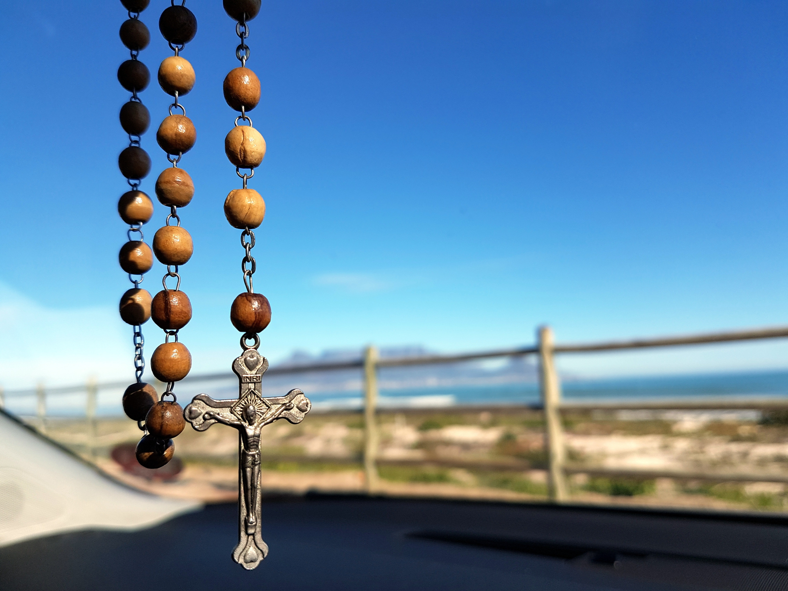

It has to do with Mary mother of God Immaculate conception
The Immaculate Conception is the belief that the Virgin Mary was free of original sin from the moment of her
conception.-Wikipedia
The Holy Rosary
What is the Holy Rosary?
The word “Rosary” means a chain of roses and the roses are prayers. The Rosary Prayer tells us about the life of
Jesus and his Mother, Mary. In the Church, the month of October is, by custom, the month of the Rosary but people
do use this prayer all the year round.
Why is the Holy Rosay Important?
Many great popes, saints, and Christian leaders have exhorted us to pray the rosary. It's a powerful prayer, they
say, one that can change your life, strengthen the family, bring peace to the world, convert entire nations, and
win the salvation of souls- By franciscan-spirit-blog
The fifteen promises of the Holy rosary:

The Holy Rosary
Whoever shall faithfully serve me by the recitation of the Rosary, shall receive signal graces.
I promise my special protection and the greatest graces to all those who shall recite the Rosary.
The Rosary shall be a powerful armor against hell, it will destroy vice, decrease sin, and defeat heresies.
The Rosary will cause virtue and good works to flourish; it will obtain for souls the abundant mercy of God;
it will withdraw the hearts of men from the love of the world and its vanities, and will lift them to the desire
for eternal things. Oh, that souls would sanctify themselves by this means.
The soul which recommends itself to me by the recitation of the Rosary, shall not perish.
Whoever shall recite the Rosary devoutly, applying himself to the consideration of its sacred mysteries shall
never be conquered by misfortune. God will not chastise him in His justice, he shall not perish by an unprovided
death; if he be just he shall remain in the grace of God, and become worthy of eternal life.
Whoever shall have a true devotion for the Rosary shall not die without the sacraments of the Church.
Those who are faithful to recite the Rosary shall have during their life and at their death the light of God
and the plenititude of His graces; at the moment of death they shall participate in the merits of the saints in
paradise.
I shall deliver from Purgatory those who have been devoted to the Rosary.
The faithful children of the Rosary shall merit a high degree of glory in Heaven.
You shall obtain all you ask of me by the recitation of the Rosary.
All those who propagate the Holy Rosary shall be aided by me in their necessities.
I have obtained from my Divine Son that all the advocates of the Rosary shall have for intercessors the
entire celestial court during their life and at the hour of death.
All who recite the Rosary are my sons and daughters, and brothers and sisters of my only Son Jesus Christ.
Devotion of my Rosary is a great sign of predestination.